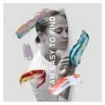

Music Reviews
-

The Black Keys "Let's Rock"
The Black Keys are honest about where they stand—"Let's Rock" does rock, and it works to their advantage that they conceived their ninth album in more modest terms.
Juan Edgardo Rodríguez reviews... -
Freddie Gibbs & Madlib Bandana
Coming off the coattails of the duo’s 2014 full-length collaborative debut, Piñata, Freddie Gibbs and Madlib have released another quality project.
Jackson Glassey reviews... -

Chuck Mead Close to Home
The Nashville-based performer keeps rockabilly chugging along as a viable musical idea, all the way down to the tape echo.
Jackson Glassey reviews... -

Bill Callahan Shepherd in a Sheepskin Vest
After a ten-year hiatus, Bill Callahan returns with Shepherd in a Sheepskin Vest, his most ambitious, masterful, and satisfying work yet.
Kirk Sever reviews... -

Bruce Springsteen Western Stars
On his 18th album, the Jersey legend embraces a sleek, California sound where his characters are roving and circuitous—uncertain about their predicted fate.
Juan Edgardo Rodríguez reviews... -

Stef Chura Midnight
On her second full-length album, the Detroit, Michigan singer-songwriter uses her reactive emotions with humor and acerbity—and raw, squalling distortion.
Juan Edgardo Rodríguez reviews... -
YG 4REAL 4REAL
On his 4th album, the Compton rapper pays his respects to the late Nipsey Hussle by keeping the spirit of gangsta rap alive.
Juan Edgardo Rodríguez reviews... -

Alex Lahey The Best of Luck Club
Alex Lahey doesn’t need luck. This album proves that she has enough dedication, talent and spirit to keep doing it right for years to come.
Joe Marvilli looks at Lahey's interior demeanor... -
Carly Rae Jepsen Dedicated
The Canadian singer/songwriter's 4th album has no shortage of glitzy, very 2019 sonic accouterments with a touch of revisionism.
Juan Edgardo Rodríguez reviews... -

The National I Am Easy To Find
On their eight album, The National sound confident and re-energized but also, for the first time, a little lost.
Matthew Smith reviews...